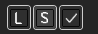
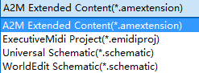
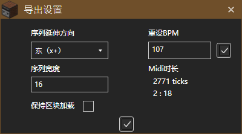

ExecutiveMidi支持导出schematic、amextension、emidiproj。

点击"S"导出。

选择文件格式。
如果导出的是Schematic，则将打开"导出设置界面"（与A2M相似）

点击最下方"对勾"完成导出。
即存档信息文件。使用MCEdit或WorldEdit导入Minecraft。(Schem适用于1.13的WorldEdit)
详见"A2M-扩展内容"
即ExecutiveMidi的工程文件。类似amproj，支持相对路径与绝对路径。